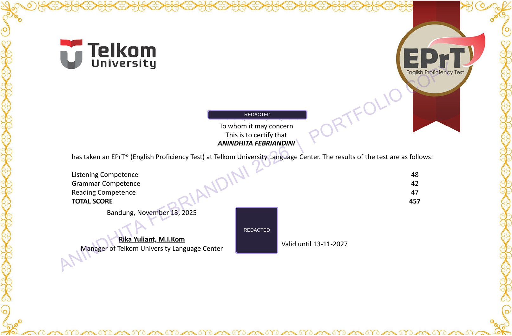

01 / TEST RESULT
Total score: 457
The certificate records an EPrT result from Telkom University Language Center. Section scores were 48 for Listening, 42 for Grammar, and 47 for Reading. The certificate states that the result is valid until November 13, 2027.
LISTENING48
GRAMMAR42
READING47
02 / CERTIFICATE
English assessment record
A portfolio copy of the certificate. The certificate number, QR verification code, and source-page footer have been obscured; the watermark is embedded in the image.
